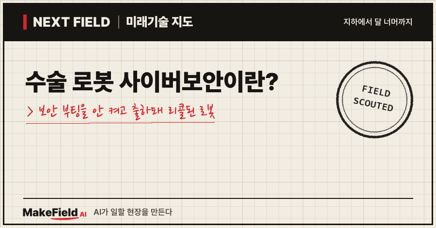
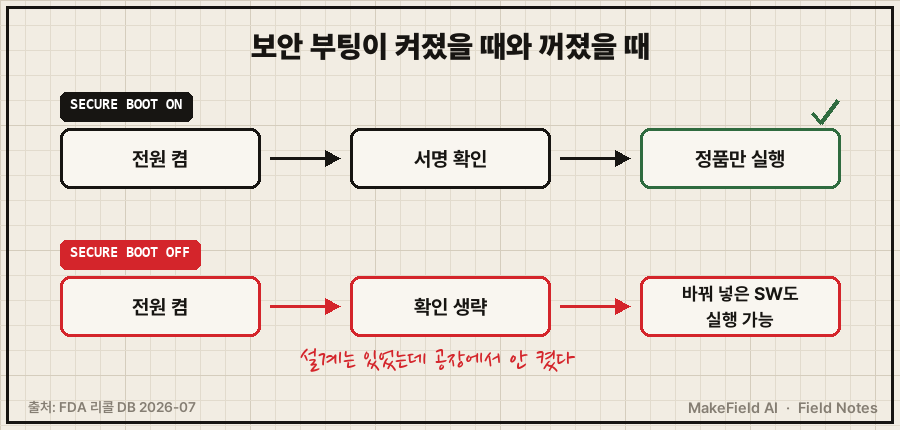
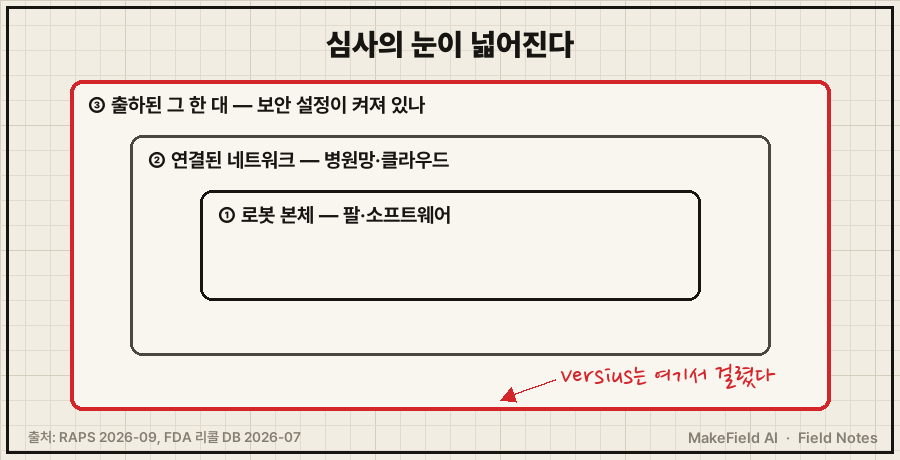
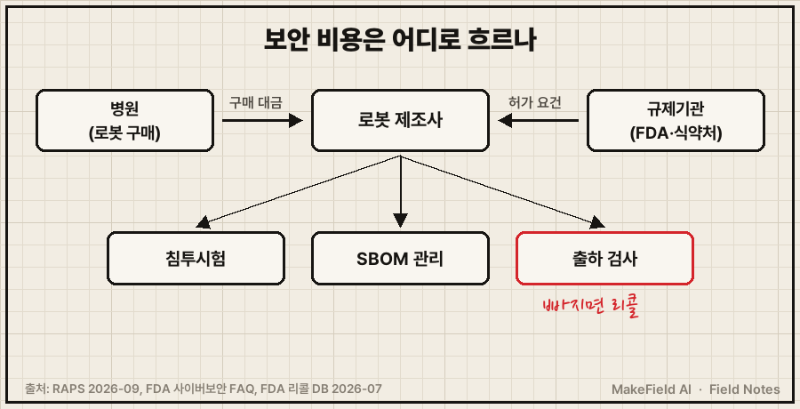

수술 로봇의 보안 사고라고 하면 해커가 로봇 팔을 조종하는 장면부터 떠올리기 쉬워요. 그런데 2026년 미국 식품의약국(FDA) 리콜 장부에 오른 실제 사례는 훨씬 평범했습니다. 공장에서 보안 기능 하나를 켜지 않고 내보낸 거예요.
한 줄 요약: 영국 CMR Surgical의 수술 로봇 'Versius' 외과의 콘솔 2대가 "제조 시점에 Secure Boot가 실수로 활성화되지 않아" Class 2 리콜이 됐고(FDA 리콜 DB 2026-07), 같은 해 9월 FDA는 수술 로봇 허가 신청 때 로봇과 통신하는 모든 네트워크 요소까지 침투시험을 하라는 가이던스 초안을 냈다(RAPS 2026-09).
이 글은 2026년 11월 기준 공개 자료로 수술 로봇 사이버보안이 무엇인지, 왜 지금 규제가 조여지는지, 그 비용은 누가 내고 누가 받는지, 그리고 이 흐름의 한계는 무엇인지 차례로 풀어 봅니다.
1. 수술 로봇 사이버보안이란 무엇인가요
수술 로봇 사이버보안이란 수술 로봇의 소프트웨어와 통신 연결이 조작·침입당하지 않게 막고, 막혀 있는 상태가 출하된 한 대 한 대에서 실제로 유지되게 하는 일이다. 로봇 팔의 정밀도만큼, 그 팔을 움직이는 소프트웨어가 '진짜'인지가 중요해졌어요.
💡 수술 로봇 — 의사가 콘솔에 앉아 로봇 팔을 원격으로 조종해 수술하는 장비. 대표 제품은 미국 인튜이티브 서지컬의 '다빈치'다.
FDA가 리콜 장부에 적은 Versius 사례의 사유 원문은 이렇습니다.
Secure Boot was mistakenly not enabled at manufacturing time,
which presents a potential cybersecurity risk.FDA는 원인을 '소프트웨어 설계(제조 공정)'로 분류했어요. 대상은 외과의 콘솔(모델 V-SS-1020, 소프트웨어 62.1) 2대이고, 회사가 2026년 6월 9일 리콜을 시작해 FDA가 7월 9일 게시했습니다. 11월 기준 상태는 '진행 중'이에요(FDA 리콜 DB 2026-07).
💡 Secure Boot(보안 부팅) — 장비가 켜질 때 제조사가 서명한 '정품' 소프트웨어만 실행되게 막는 기능. 꺼져 있으면 누군가 바꿔 넣은 소프트웨어도 그냥 돌아갈 수 있다.
💡 Class 2 리콜 — FDA 리콜 세 등급 중 가운데. 일시적이거나 회복 가능한 건강 위험이 생길 수 있는 경우다. 가장 심각한 것은 Class 1.

그림을 글로 옮기면, 보안 부팅이 켜진 장비는 전원을 켤 때 소프트웨어의 서명을 먼저 확인하고 정품만 실행해요. 꺼진 장비는 이 확인을 건너뛰어 바꿔 넣은 소프트웨어도 실행될 수 있습니다. Versius 사례는 기능이 없던 게 아니라 출하 과정에서 켜지지 않은 경우였어요.
회사가 내놓은 조치도 눈여겨볼 만해요. 회사나 현지 대리점이 해당 콘솔의 보안 부팅 설정을 직접 해 주고, 그때까지는 장비를 접근이 제한된 곳에 두고, 쓰기 전마다 훼손 방지 라벨을 살펴 손댄 흔적이 있으면 쓰지 말라고 안내했습니다(FDA 리콜 DB 2026-07). 소프트웨어 설정 하나가 빠지자 '눈으로 보는 봉인 점검'이 임시 방패가 된 셈이에요.
2. 왜 지금 수술 로봇 보안 규제가 조여지나요
수술 로봇이 많이 깔리고 병원 네트워크·클라우드와 연결되면서, FDA가 로봇 한 대가 아니라 로봇이 연결된 환경 전체를 허가 심사 대상으로 보기 시작했기 때문이다.
먼저 깔린 양이 커요. 인튜이티브 서지컬은 2026년 6월 30일 기준 다빈치 설치 대수가 11,710대로 1년 전 10,488대보다 12% 늘었고, 2분기 다빈치·Ion 수술 건수는 전년보다 약 16% 늘었다고 밝혔습니다(인튜이티브 서지컬 2026-07).
다음은 규제예요. FDA는 2026년 9월 수술 로봇 허가 신청 가이던스 초안 'Robotically-Assisted Surgical Devices: Premarket Submissions'를 냈고, 의견 접수는 2026년 11월 24일까지예요(FDA 2026-09). 초안이라 아직 구속력은 없습니다.
💡 FDA 가이던스(초안) — "허가 신청서에 이런 시험·자료를 넣어라"라고 안내하는 문서. 초안 단계에서 의견을 받고, 확정되면 사실상 심사 기준이 된다.
| 구분 | 내용 | 출처 |
|---|---|---|
| 대상 | 원격 조종되는 소프트웨어 제어 수술 로봇 | RAPS 2026-09 |
| 사이버보안 | "침투시험을 포함한 사이버보안 평가는 수술 로봇과 통신하는 모든 네트워크 요소를 고려해야 한다" | RAPS 2026-09 |
| 시험 범위 | 로봇 움직임, 소프트웨어 설계, 신뢰성·정확도, 사이버보안, 안전·멸균, 영상 표시, 수술팀과의 상호작용 | 메드시티뉴스 2026-10 |
| 위험 서술 | "사이버보안 유지 실패는 기기 기능 손상 같은 위험으로 이어질 수 있고, 이는 환자 상해로 이어질 가능성이 있다" | 메드시티뉴스 2026-10 |
| 일정 | 의견 마감 2026-11-24, 초안·구속력 없음 | FDA 2026-09 |
💡 침투시험 — 보안 전문가가 공격자처럼 실제로 뚫어 보며 약한 곳을 찾는 시험. '모의 해킹'이라고도 한다.
이 가이던스 위에는 이미 법이 있어요. 미국은 2022년 12월 29일 제정된 법으로 식품의약품화장품법에 524B조를 넣어, 인터넷에 연결될 수 있는 소프트웨어가 든 '사이버 기기'의 허가 신청서에 사이버보안 자료와 소프트웨어 부품 목록(SBOM)을 내게 했습니다(FDA 사이버보안 FAQ).
💡 SBOM(소프트웨어 부품 목록) — 제품 안에 든 소프트웨어 부품의 명세서. 어떤 부품에 취약점이 나오면 어느 제품이 영향을 받는지 바로 찾을 수 있게 해 준다.
한국도 같은 방향이에요. 디지털의료제품법은 2024년 1월 23일 제정돼 2025년 1월 24일 시행됐고, 식약처가 정한 보안지침을 디지털의료기기 제조업자가 지켜야 하며 전자적 침해행위에 대한 취약점을 계속 보완해야 한다고 정했습니다(법무법인 세종 2025-01).
💡 디지털의료제품법 — 소프트웨어·AI·연결 기능이 든 의료기기를 따로 관리하는 한국 법. 해킹 같은 '전자적 침해행위' 대비를 제조사 의무로 넣었다.

그림을 글로 정리하면, 심사의 질문은 세 겹으로 넓어지고 있어요. ① 로봇 자체가 안전하게 설계됐나, ② 로봇과 통신하는 병원망·클라우드까지 포함해 뚫리지 않나, ③ 실제로 출하된 그 한 대에서 보안 설정이 설계대로 켜져 있나입니다. Versius 리콜은 세 번째 겹에서 생긴 일이에요.
3. 돈의 흐름 — 누가 사고 누가 팔며 얼마인가요
수술 로봇을 사는 쪽은 병원이고, 파는 쪽은 로봇 제조사다. 보안 규제가 늘어나면 그 비용은 제조사가 허가 준비 단계에서 먼저 낸다. 보안 시험·부품 목록 관리·출하 검사가 제조 원가 안으로 들어오는 구조예요.
시장 자체는 커지고 있다는 전망이 많아요. 시장조사사 마켓앤드마켓은 세계 수술 로봇 시장이 2024년 111억 달러에서 2029년 237억 달러로 연 16.5% 커진다고 전망했습니다(마켓앤드마켓, 추정). 같은 회사의 최신판은 2025년 136.9억 달러에서 2030년 271.4억 달러로 기간과 성장률을 바꿔 잡았어요(마켓앤드마켓, 추정). 판마다 숫자가 달라 방향만 참고하는 게 안전합니다.
| 역할 | 누가(예시) | 무엇을 사고파나 |
|---|---|---|
| 사는 쪽 | 병원 | 수술 로봇 본체·수술 도구 |
| 파는 쪽 | 인튜이티브 서지컬, CMR Surgical, 국내 미래컴퍼니 등 | 로봇 + 허가에 필요한 시험·문서 |
| 보안 비용을 대는 쪽 | 로봇 제조사 | 침투시험, SBOM 작성·관리, 출하 검사 |
| 기준을 정하는 쪽 | FDA, 식약처 | 허가 요건·가이던스·리콜 |
※ 위 기업명은 산업 구조를 설명하기 위한 예시입니다. 특정 종목의 매수·매도를 권하는 글이 아닙니다.
국산 수술 로봇 회사에게 이 규제는 '수출 관문'이에요. 복강경 수술 로봇 '레보아이'를 만드는 미래컴퍼니는 2026년 1분기 매출 212억 원, 영업이익 13억 원으로 9분기 연속 적자를 끊었고, 매출 중 수출이 155억 원으로 73.4%였다고 보도됐습니다. 2025년 연간 수출 비중은 33.0%였어요(데일리팜 2026-06). 해외에서 팔수록 그 나라의 허가 문턱, 특히 사이버보안 요건을 넘는 일이 사업의 일부가 됩니다.

그림을 글로 옮기면, 병원이 낸 구매 대금은 제조사로 가고, 제조사는 규제기관이 정한 허가 요건을 맞추느라 침투시험·SBOM 관리·출하 검사에 돈을 씁니다. 이 중 하나라도 빠지면 Versius처럼 출하 뒤 리콜로 되돌아와요. 다만 수술 로봇 보안 시험만 따로 떼어 낸 시장 규모 공개 수치는 찾지 못했습니다.
4. 언제 오나요, 한계는 무엇인가요
FDA 수술 로봇 가이던스는 2026년 11월 현재 초안이라, 확정되고 실제 심사에 쓰이기까지는 시간이 더 걸린다. 방향은 분명하지만 속도와 범위는 아직 정해지지 않았어요.
- 아직 초안이다: 의견 마감이 2026년 11월 24일이고, 초안은 구속력이 없어요(FDA 2026-09). 의견을 반영해 내용이 바뀔 수 있습니다.
- 사례는 1건·2대다: Versius 리콜 대상은 콘솔 2대뿐이고(FDA 리콜 DB 2026-07), 환자 피해 보고는 검색으로 찾지 못했어요. 이 1건만으로 '출하 보안 사고가 흔하다'고 말하기는 이릅니다.
- 병원 쪽 준비가 변수다: 메드시티뉴스는 FDA 가이던스가 로봇을 "훨씬 더 넓은 임상 시스템의 일부"로 본다는 업계 발언을 전하며, 수술실이 이 기술을 받아들일 준비가 됐는지 물었어요(메드시티뉴스 2026-10). 로봇 회사만 잘해서 끝나는 일이 아니라는 뜻입니다.
- 숫자가 흔들린다: 시장 전망은 같은 조사사 안에서도 판마다 달라요(마켓앤드마켓, 추정).
자주 묻는 질문
Q. 수술 로봇이 실제로 해킹당한 사례가 있나요?
이 글에서 확인한 FDA 리콜 사례는 해킹이 아니라 "제조 시점에 Secure Boot가 실수로 활성화되지 않은" 경우였어요. 리콜 장부에도 '잠재적 사이버보안 위험'으로 적혀 있습니다(FDA 리콜 DB 2026-07).
Q. FDA 수술 로봇 가이던스는 언제부터 지켜야 하나요?
2026년 11월 현재 의견 접수 중인 초안이라 구속력이 없어요. 의견 마감은 2026년 11월 24일입니다(FDA 2026-09). 다만 사이버 기기에 사이버보안 자료와 SBOM을 내게 하는 524B조는 이미 법으로 시행 중이에요(FDA 사이버보안 FAQ).
Q. 한국 수술 로봇에도 같은 규제가 있나요?
한국은 2025년 1월 24일 시행된 디지털의료제품법으로 디지털의료기기 제조업자에게 보안지침 준수와 취약점 보완 의무를 지웠어요(법무법인 세종 2025-01).
오늘의 용어 정리
- 수술 로봇 — 의사가 콘솔에서 로봇 팔을 원격 조종해 수술하는 장비
- Secure Boot(보안 부팅) — 켤 때 정품 서명 소프트웨어만 실행되게 하는 기능
- Class 2 리콜 — FDA 리콜 중간 등급(일시적·회복 가능한 위험)
- FDA 가이던스(초안) — 허가 신청서에 넣을 시험·자료를 안내하는 문서, 초안은 구속력 없음
- 침투시험 — 공격자처럼 실제로 뚫어 보며 약점을 찾는 시험
- 사이버 기기 — 인터넷에 연결될 수 있는 소프트웨어가 든 의료기기(미국 524B조 기준)
- SBOM — 제품 속 소프트웨어 부품 명세서
- 디지털의료제품법 — 소프트웨어·연결형 의료기기를 관리하는 한국 법(2025-01-24 시행)
지난 Next Field에서 바다 밑 전기 고속도로를 따라갔다면, 오늘은 수술실 안 로봇의 '켜는 순간'을 들여다봤어요. 출하된 장비 한 대의 보안 설정이 설계대로인지, 앞으로 누가 어떻게 확인하게 될까요?
출처
[1] FDA 리콜 DB(2026-07) — CMR Surgical Versius 외과의 콘솔(V-SS-1020, SW 62.1) 2대 Class 2 리콜, 사유 "제조 시점 Secure Boot 미활성화", 원인 분류 소프트웨어 설계(제조 공정), 2026-06-09 개시·07-09 게시, 진행 중, 보안 부팅 재설정·훼손 방지 라벨 점검 안내
→ https://www.accessdata.fda.gov/scripts/cdrh/cfdocs/cfRES/res.cfm?id=221187
[2] FDA(2026-09) — 수술 로봇 허가 신청 가이던스 초안 'Robotically-Assisted Surgical Devices: Premarket Submissions', 의견 마감 2026-11-24, 초안·구속력 없음
→ https://www.fda.gov/regulatory-information/search-fda-guidance-documents/robotically-assisted-surgical-devices-premarket-submissions
[3] RAPS(2026-09) — 가이던스 대상(원격 조종 소프트웨어 제어 수술 로봇), 침투시험 포함 사이버보안 평가가 로봇과 통신하는 모든 네트워크 요소를 고려해야 한다는 원문
→ https://www.raps.org/resource/fda-draft-guidance-addresses-considerations-for-robotically-assisted-surgical-devices.html
[4] 메드시티뉴스(2026-10) — 가이던스 시험 범위(움직임·소프트웨어·신뢰성·정확도·사이버보안·안전·영상·수술팀 상호작용), 사이버보안 실패가 기기 기능 손상·환자 상해로 이어질 수 있다는 인용, 수술실 준비 문제 제기
→ https://medcitynews.com/2026/10/are-hospital-operating-rooms-ready-for-fdas-expectations-for-surgical-robots/
[5] FDA 사이버보안 FAQ — 2022-12-29 제정 법으로 신설된 524B조, 사이버 기기 정의, 허가 신청 시 사이버보안 자료·SBOM 제출 요건
→ https://www.fda.gov/medical-devices/digital-health-center-excellence/cybersecurity-medical-devices-frequently-asked-questions-faqs
[6] 인튜이티브 서지컬(2026-07) — 2026-06-30 기준 다빈치 설치 11,710대(전년 10,488대 대비 +12%), 2분기 다빈치·Ion 수술 건수 약 +16%
→ https://investor.intuitivesurgical.com/news-releases/news-release-details/intuitive-announces-second-quarter-earnings-6
[7] 마켓앤드마켓 — 세계 수술 로봇 시장 111억 달러(2024)→237억 달러(2029), 연 16.5% 전망 및 최신판 136.9억 달러(2025)→271.4억 달러(2030) 전망(상업 보고서)
→ https://marketsandmarkets.com/PressReleases/surgical-robots.asp
[8] 데일리팜(2026-06) — 미래컴퍼니 2026년 1분기 매출 212억 원·영업이익 13억 원, 9분기 연속 적자 종료, 수출 155억 원(73.4%), 2025년 수출 비중 33.0%
→ https://dailypharm.com/user/news/339325
[9] 법무법인 세종(2025-01) — 디지털의료제품법 2024-01-23 제정·2025-01-24 시행, 보안지침 준수 의무와 전자적 침해행위 취약점 지속 보완 의무
→ https://shinkim.com/kor/media/newsletter/2704